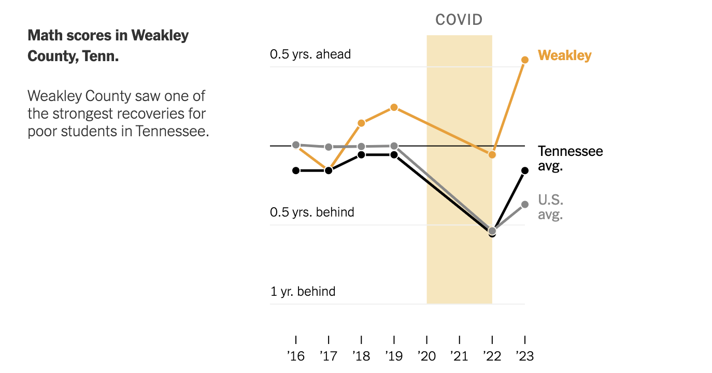
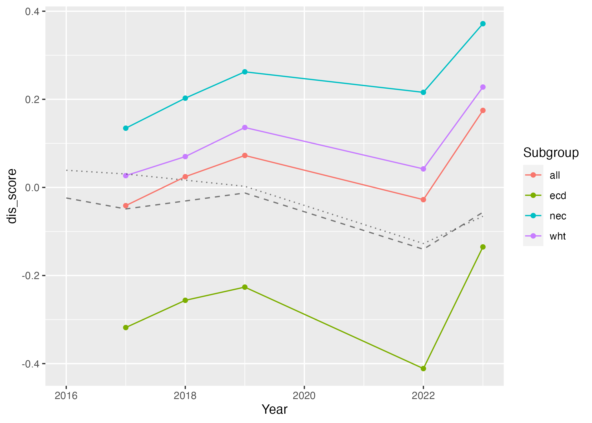
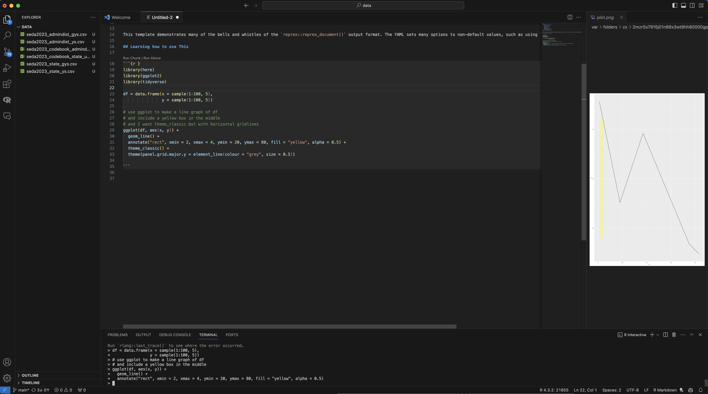
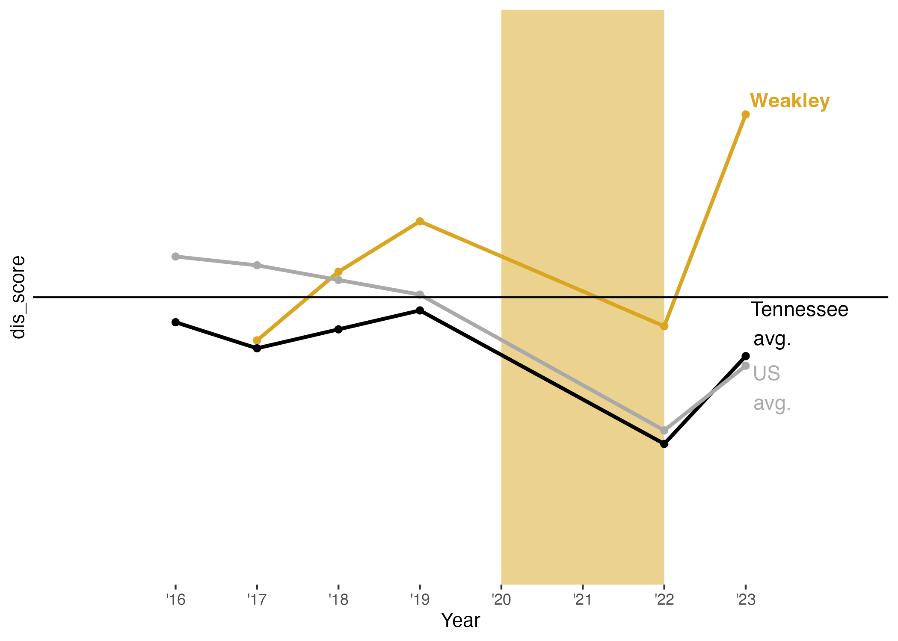

#install.packages("here")
library(here)
#install.packages("tidyverse")
library(tidyverse)
#install.packages("dplyr")
library(dplyr)
#install.packages("ggplot2")
library(ggplot2)Presentation Exercise
Purpose
In this exercise, I would like to try to recreate this figure from this New York Times arcticle.

The article discusses a resurgence of high test scores after school closures and remote learning during the COVID-19 Pandemic in the US. US standardized test score data by state and county are available through the Educational Opportunity Project at Stanford University.
The datasets - one for state-level data and one at the grain of county - contain test score estiamtions by standardized year and grade-standardized year (and, to be frank, I’m not quite sure what the difference is.) I am unsure what filters were applied to the dataset, but the figures I generate below get pretty close!
Loading the datasets and subsetting pertinent information
The scores_admindis2023 dataset contains the average math and english test scores reported for each county for each state in the US, stratified by socioeconomic and racial class. Scores were reported for each state for the years 2016-2023, excluding 2020/2021, during which no standardized testing occured. Each observation pertains to the reported scores for a single subclass in a single district across the 7-year span.
The stateabb variable contains a character vector of the abbreviated state name; the sedaadminname variable contains a character vector of the names of the districts reporting each observation; the subject variable contains a character vector of the tested subjects, “mth” for math or “rla” for language exams; the subgroup variable contains a character vector of the subgroup for which the average score in the district was calculated, meaning there will be length(subgroup) observations for each district; lastly, the columns ys_mn_2016_ol, ys_mn_2017_ol … ys_mn_2023_ol contain the scores reported by the district for the subclass over the 7-year period.
The scores_state2023 dataset contains the same information, excluding the sedaadminname variable.
In order to recreate the New York Times figure, I know that I need
- the average math test scores reported for Weakley County, Tennessee;
- the average test scores reported for Tennessee; and
- the average of the average test scores reported across all states in the US.
For the purpose of this exercise, I am unsure which subgroup’s average scores are being reported; thus, I consider the average score across all classes. Thus, I filter for the average of all class scores, or the all subgroup.
I obtain the observations for Weakley Counties average math test scores from the scores_admindis2023 dataset. I obtain the mean of the average math test scores reported from 2016-2023 by Tennessee, as well as the average math test scores reported from 2016-2023 across all states, from the scores_state2023 dataset.
Loading the dataset
The following codechunk loads the SEDA datasets:
# load mean scores by state
scores_state2023 = read.csv(here( "data", "seda2023_state_ys.csv")) #test score data by state
# load mean scores by counties within states
scores_admindis2023 = read.csv(here("data", "seda2023_admindist_ys.csv")) #test score data by county Subsetting and generating relavent information
The following codechunk processes the SEDA data to obtain three time series of the average math test scores across all subgroups for 1) Weakley County, 2) Tennessee, and 3) the US.
### Weakley Country mean test scores by year
# create subset of district scores dataset for Weakley County, TN, only
weakley_county = scores_admindis2023 %>%
filter(stateabb == "TN", sedaadminname == "Weakley County", subject == "mth" ) %>% #filter for weakley county math data
select("stateabb", "sedaadminname", "subject", "subgroup", #include state, county, and subject name to ensure the filters were correct; include subgroup to filter on the poor
colnames(scores_admindis2023)[grep( '_ol$', colnames(scores_admindis2023))])
# let's see how this looks
head(weakley_county) #missing 2016 data is curious. I'll have to come back to this. stateabb sedaadminname subject subgroup ys_mn_2016_ol ys_mn_2017_ol
1 TN Weakley County mth all NA -0.04134371
2 TN Weakley County mth ecd NA -0.31809371
3 TN Weakley County mth nec NA 0.13446430
4 TN Weakley County mth wht NA 0.02672900
ys_mn_2018_ol ys_mn_2019_ol ys_mn_2022_ol ys_mn_2023_ol ys_mn_1922_ol
1 0.02434486 0.07254493 -0.02776205 0.1748283 -0.10030698
2 -0.25630497 -0.22634657 -0.41122632 -0.1350673 -0.18487975
3 0.20263028 0.26241854 0.21583720 0.3716923 -0.04658134
4 0.06999616 0.13601488 0.04206806 0.2278517 -0.09394683
ys_mn_1923_ol ys_mn_2223_ol
1 0.10228333 0.2025903
2 0.09127931 0.2761591
3 0.10927373 0.1558551
4 0.09183686 0.1857837# I want to remove the measurements from 1922, 1923, and 2223
weakley_county = weakley_county %>%
select(-c("ys_mn_1922_ol", "ys_mn_1923_ol", "ys_mn_2223_ol")) # I couldn't think of a clever way to use grep to do this, oh well!
### Tenessee and US mean test scores by Year
## US
# First, I am creating a vector of the columns (mean scores for each state, by year) for which to take the mean across all states
score_column_names = colnames(scores_state2023)[grep( '_ol$', colnames(scores_state2023))]
score_column_names = score_column_names[-grep("ys_mn_1922_ol|ys_mn_1923_ol|ys_mn_2223_ol", score_column_names)] #yes, i'm doing it this way so that if any columns had been added to the dataset, I wouldn't have to readjust the indices!
# vector of US means by Year
US_means = scores_state2023 %>%
filter(subgroup=="all") %>%
select(colnames(scores_state2023)[grep('^ys_mn_20.*._ol$', colnames(scores_state2023))]) %>%
colMeans(na.rm = T)
## TN
# vector of TN means by year
TN_means = scores_state2023 %>%
filter(stateabb == "TN") %>%
filter( subgroup == "all") %>%
select(colnames(scores_state2023)[grep('^ys_mn_20.*._ol$', colnames(scores_state2023))]) %>%
#I figured out how to exclude the 22__ and 19__ years!
colMeans(na.rm=T)
# now I need a data frame that puts this data into longform by subgroup; that is, I need to repeat a vector of the years scores were collected the number of times we have subgroups, i.e c(2016,2017,2018,2019...2016,2017,2018,2019...); the subgroups we have EACH the number of years that were observed, i.e (all, all, all, all...wht, wht, wht....); and the scores we have across the year columns need to be collapsed into a vector of c(subgroup 1 measurements across years, subgroup 2 measurements across years...)
years = c(2016,2017,2018,2019,2022,2023)
timeseries_weakley_county = data.frame("Year" = rep(years, times = length(weakley_county$subgroup)),
"Subgroup" = rep(weakley_county$subgroup, each = length(years)),
"dis_score" = as.vector(t(weakley_county[,grep( '_ol$', colnames(weakley_county))])), #the grep function returns the indices of the vector elements which match some pattern; adding $ to the end of my pattern returns elements that END WITH the pattern! #the t() function transposes my dataframe so that the functionas.vector, which converts a dataframe into a vector columnwise, will instead return the vector rowwise
"state_score" = rep(TN_means, times = length(weakley_county$subgroup)),
"US_score" = rep(US_means, times = length(weakley_county$subgroup)))Notice how I generated a long-form dataframe, with a column for “Year” and three columns for Weakley, Tennessee, and US scores, for ease of ggplotting. :)
We can see how easy it is to group our time series data in the simple plots generated by the code chunk below.
plot1 = ggplot() + geom_point(data=timeseries_weakley_county, aes(x=Year, y = dis_score, col = Subgroup)) +
geom_line(data=timeseries_weakley_county, aes(x=Year, y = dis_score, col = Subgroup)) +
geom_line(data=timeseries_weakley_county, aes(x=Year, y = state_score), alpha = 0.5, linetype = "dashed") +
geom_line(data=timeseries_weakley_county, aes(x=Year, y = US_score), alpha = 0.5, linetype = "dotted")
figure_file = here("figures","simple_lineplot.png")
ggsave(filename = figure_file, plot=plot1) 
I am going to use CoPilot to turn Figure 2 into a close rendition of ?@fig-New-York-Times-fig.
Using GitHub CoPilot to learn how to generate more visually effective plots
GitHub offers a wonderful feature for free to students, teachers, and popular public repository runners called “CoPilot”.
CoPilot functions almost identically to an RStudio terminal, with the added benefit that one can ask questions (or really, make demands!) via comments. And, it’s not only limited to coding in R!
I am posting a link to the CoPilot main page here.
?@fig-copilot-example.png shows an example of the copilot interface. Here, I didn’t know how to generate the yellow rectangle in the New York Times figure - so, I asked!

The file questions_for_AI.rmd in the presentation-exercise folder of my github repository contains a record of all of the questions I asked of copilot to help me format my figure, and the code I implemented and its output (Figure 4) are shown in the code chunk below! I have added comments to the ggplotting code to show where I have implemented the AI’s suggestions:
plot = timeseries_weakley_county %>%
filter(Subgroup == "all") %>%
ggplot() +
annotate("rect",
xmin = 2020, xmax = 2022,
ymin = -Inf, ymax = Inf,
fill = "goldenrod", alpha = 0.5) + #this is where I am using github copilot!
theme_classic() +
theme(panel.grid.major.y = element_line(colour = "grey", size = 0.5),
axis.ticks.y = element_blank(),
axis.line = element_blank()) + #and here
geom_point(aes(x = Year, y = dis_score),
col = "goldenrod") +
geom_line(aes(x = Year, y = dis_score),
lwd = 1,
col = "goldenrod") +
geom_point(aes(x = Year, y = state_score),
col = "black") +
geom_line(aes(x = Year, y = state_score),
lwd = 1, col = "black") +
geom_point(aes(x = Year, y = US_score),
col = "darkgrey") +
geom_line(aes(x = Year, y = US_score),
lwd = 1,
col = "darkgrey") +
geom_hline(yintercept = 0) +
scale_y_continuous(limits = c(-0.25, 0.25),
breaks = NULL) + #and here
scale_x_continuous(breaks = seq(min(timeseries_weakley_county$Year), max(timeseries_weakley_county$Year), by = 1),
labels = paste0("'", seq(min(timeseries_weakley_county$Year)-2000, max(timeseries_weakley_county$Year)-2000, by = 1)),
expand = c(0.25, 0)) +
annotate("text", x = rep(2023, 3),
y = as.vector(t(timeseries_weakley_county %>%
filter(Subgroup == "all", Year == 2023) %>%
select(dis_score,state_score,US_score))),
label = c("Weakley", "Tennessee \n avg.", "US \navg."),
hjust = c(-0.05,-0.05,-0.2),
vjust = c(-0.5,-0.25, 1),
size = 4,
col = c("goldenrod", "black", "darkgrey"),
fontface = c(2,1,1)) #and here!
figure_file = here("figures","regenereated.png")
ggsave(filename = figure_file, plot=plot) 